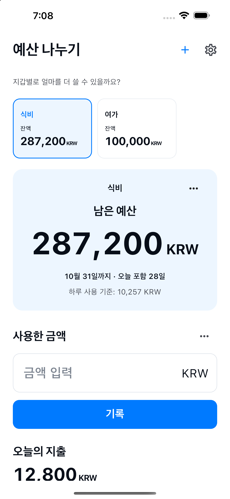

원하는 이름으로 지갑을 만들고 예산을 정하세요.
지갑별로 얼마를 더 쓸 수 있을까요?
식비도, 여가비도.
나누면 남은 예산이 보여요.
식비, 여가비, 생활용품비. 직접 만든 지갑에 예산을 나누고, 각 지갑에서 얼마를 더 쓸 수 있는지 확인하세요.
사용 방법 보기
iPhone / Android에서 이용 가능

사용 방법
나누고, 기록하고, 남은 예산을 확인하세요.
지갑을 선택하고 사용한 금액을 기록하세요.
기록에서 내역을 수정하거나 환불을 추가하세요.
다음 예산은 직접 시작하세요. 이전 기록은 남아요.
필요한 기능만
지갑은 자유롭게.
관리는 간단하게.
- 지갑 이름
- 식비, 여가, 생활용품 등 원하는 이름과 예산을 정하세요. 기본 기간은 이번 달입니다.
- 남은 예산
- 남은 예산 = 설정한 예산 − 기록한 지출 + 환불입니다. 은행이나 실제 지갑의 잔액이 아닌 입력한 기록에 따른 기준입니다. 다른 지갑의 잔액으로 초과분을 메우지 않습니다.
- 10개 언어 · 10개 통화
- 日本語 / English / 한국어 / 简体中文 / 繁體中文 / Español / Français / Deutsch / Italiano / Português (Brasil)
JPY / USD / EUR / KRW / CNY / TWD / BRL / GBP / CAD / AUD
기기에 저장되는 기록
계정이 필요 없어요.
지갑 이름, 예산, 통화, 기간과 지출·환불 금액, 날짜, 메모는 이 앱 전용 기기 내 데이터베이스에 저장됩니다. 각 지갑의 예산과 내역을 표시하는 데 사용합니다.
계정 등록은 필요하지 않습니다. 기록을 개발자 서버로 보내는 기능, 광고, 사용 분석, 추적은 없습니다. 운영체제의 백업이나 기기 이전에 데이터가 포함될 수 있으나 복원을 보장하지 않습니다. 내역에서 지출과 환불 기록을 삭제할 수 있습니다. 지갑을 보관해도 기록은 유지됩니다. 앱을 삭제하면 기기 내 기록도 삭제될 수 있습니다. 운영체제 백업은 기기 또는 계정 설정에서 관리해 주세요.
개인정보 처리방침 →